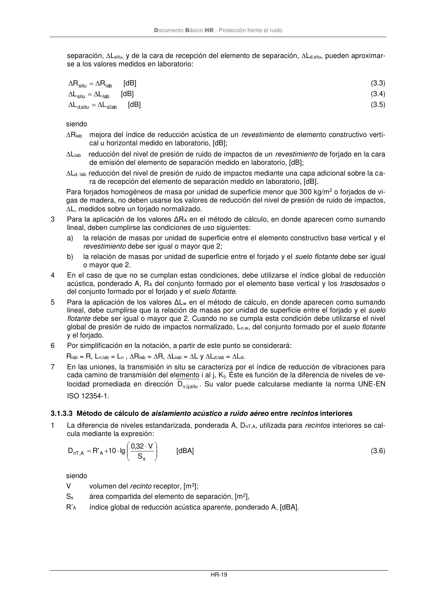

DB-HR Protección frente al ruido · edición 2019-12-20 · capa oficial
Documento DB-HR-oficial · SHA-256 del PDF a67baeca5138bb1f121f797d23a79a4557bd9ac4abacd954024893e05411eeab
Copia fiel del PDF fuente · Fuente oficial
Ficha de la disposición en la fuente oficial
Formatos: JSON del segmento · Markdown
3.1.3.2 Hipótesis para el cálculo. Comportamiento en obra de los elementos constructivos 1 Las transmisiones por vía directa y por vía de flancos deben establecerse en términos de aislamien- to medido in situ. No obstante, a efectos de este DB se consideran válidas las expresiones siguien- tes: lab situ R R = [dB] (3.1) lab ,n situ ,n L L = [dB] (3.2) siendo Rsitu índice de reducción acústica de un elemento medido in situ, [dB] Rlab índice de reducción acústica de un elemento medido en laboratorio, [dB] Ln,situ nivel de presión de ruido de impactos normalizado medido in situ, [dB] Ln,lab nivel de presión de ruido de impactos normalizado medido en laboratorio, [dB] 2 De igual forma, para revestimientos tales comotechos suspendidos, suelos flotantes y trasdosados, los valores medidos in situ de la mejora del índice de reducción acústica, Rsitu, y de la reducción del nivel de presión de ruido de impactos por revestimiento de la cara de emisión del elemento de Documento Básico HR - Protección frente al ruido HR-19 separación, Lsitu, y de la cara de recepción del elemento de separación, Ld,situ, pueden aproximar- se a los valores medidos en laboratorio: lab situ R R Δ Δ = [dB] (3.3) lab situ L L Δ Δ = [dB] (3.4) lab ,d situ ,d L L Δ Δ = [dB] (3.5) siendo Rlab mejora del índice de reducción acústica de un revestimiento de elemento constructivo verti- cal u horizontal medido en laboratorio, [dB]; Llab reducción del nivel de presión de ruido de impactos de un revestimiento de forjado en la cara de emisión del elemento de separación medido en laboratorio, [dB]; Ld, lab reducción del nivel de presión de ruido de impactos mediante una capa adicional sobre la ca- ra de recepción del elemento de separación medido en laboratorio, [dB]. Para forjados homogéneos de masa por unidad de superficie menor que 300 kg/m2 o forjados de vi- gas de madera, no deben usarse los valores de reducción del nivel de presión de ruido de impactos, L, medidos sobre un forjado normalizado. 3 Para la aplicación de los valores ΔRA en el método de cálculo, en donde aparecen como sumando lineal, deben cumplirse las condiciones de uso siguientes: a) la relación de masas por unidad de superficie entre el elemento constructivo base vertical y el revestimiento debe ser igual o mayor que 2; b) la relación de masas por unidad de superficie entre el forjado y el suelo flotante debe ser igual o mayor que 2. 4 En el caso de que no se cumplan estas condiciones, debe utilizarse el índice global de reducción acústica, ponderado A, RA del conjunto formado por el elemento base vertical y los trasdosados o del conjunto formado por el forjado y el suelo flotante. 5 Para la aplicación de los valores ΔLw en el método de cálculo, en donde aparecen como sumando lineal, debe cumplirse que la relación de masas por unidad de superficie entre el forjado y el suelo flotante debe ser igual o mayor que 2. Cuando no se cumpla esta condición debe utilizarse el nivel global de presión de ruido de impactos normalizado, Ln,w, del conjunto formado por el suelo flotante y el forjado. 6 Por simplificación en la notación, a partir de este punto se considerará: Rlab = R, Ln,lab = Ln , Rlab = R, Llab = L y Ld,lab = Ld. 7 En las uniones, la transmisión in situ se caracteriza por el índice de reducción de vibraciones para cada camino de transmisión del elemento i al j, Kij. Éste es función de la diferencia de niveles de ve- locidad promediada en dirección situ ,ij,v D . Su valor puede calcularse mediante la norma UNE-EN ISO 12354-1.
